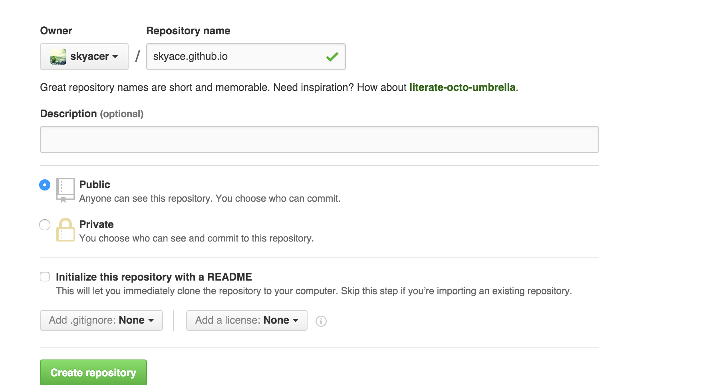

今天抽空折腾了一会终于部署成功Hexo+Github的个人博客了，迫不及待地想写点东西来记录一下部署的过程了~！Hello Hexo！
1.创建Github账号（如有账号请省略）
这里就不过多介绍了，直接点击右上角的sign up进行账号的创建
2.在github上创建repo

注意：这里必须以github.io结尾
3.
1 | $ hexo generate |
More info: Generating
Deploy to remote sites
1 | $ hexo deploy |
More info: Deployment